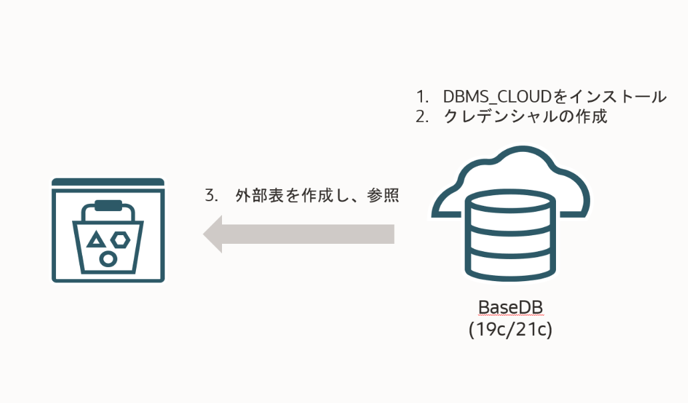
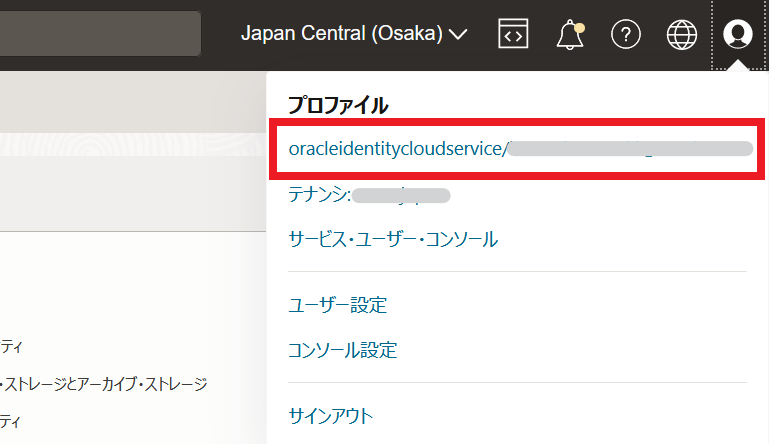
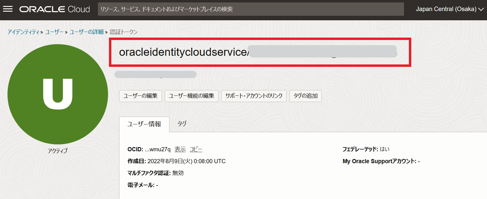
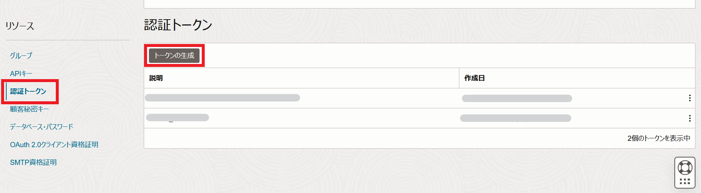
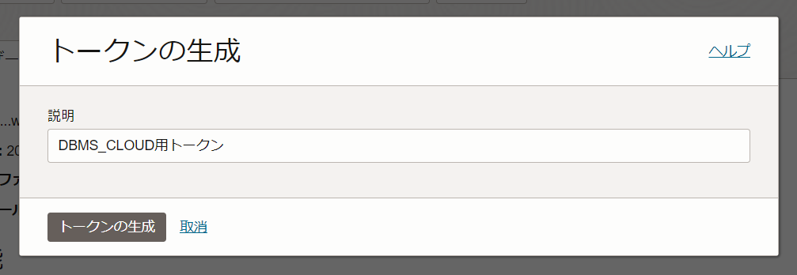
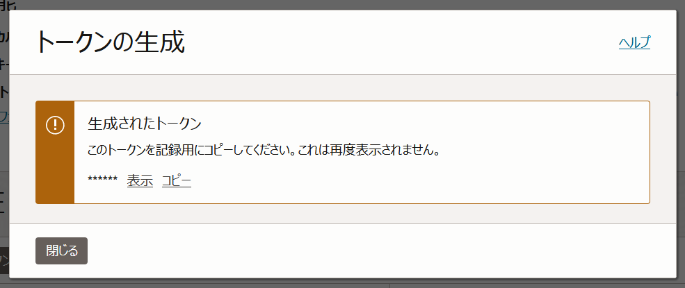
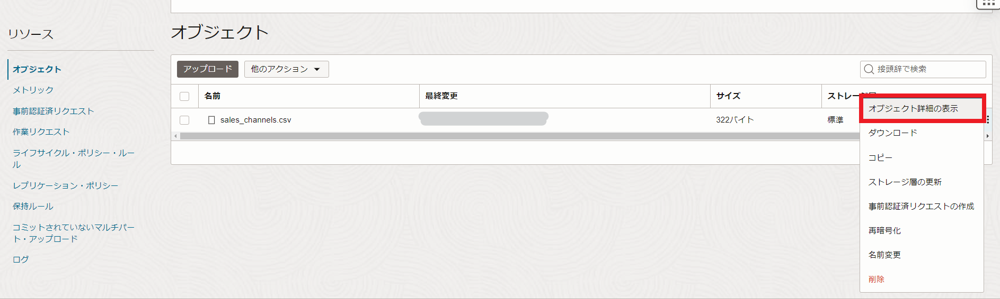

はじめに
DBMS_CLOUDはオブジェクト・ストレージのデータを操作するための包括的なサポートを提供するPL/SQLパッケージです。
DBMS_CLOUDはAutonomous Database (ADB) に実装されているPL/SQLパッケージですが、手動インストールすることでBaseDBでも利用可能です。
ADBでDBMS_CLOUDを利用する方法は202: コマンドラインから大量データをロードしてみよう(DBMS_CLOUD)で学ぶことができます。
ここでは、DBMS_CLOUDパッケージを利用してObject StorageのデータをBase Database Service (BaseDB)から外部表として参照する手順をご紹介します。
このチュートリアルで実行する内容のイメージは以下の通りです。 
前提条件 :
-
Oracle Database 19.9以上 もしくは Oracle Database 21.3以上
-
PDBにユーザーが作成されていて、そのユーザーに接続可能であること
-
101: Oracle Cloud で Oracle Database を使おう を通じて Oracle Database の作成が完了していること
- 以下にリンクされているサンプルデータのCSVファイルをダウンロードしていること
- その7 - オブジェクト・ストレージを使う を通じてバケットの作成・データファイル(CSV)のアップロードが完了していること
目次
- 1. 事前準備
- 2. DBMS_CLOUD PL/SQLパッケージのダウンロード
- 3. Walletの作成
- 4. Walletの場所の設定
- 5. ACEs(Access Control Entries)の作成
- 6. DBMS_CLOUDの設定を検証
- 7. ユーザ・ロールへの権限付与
- 8. ユーザ・ロールのためのACEsを設定
- 9. クレデンシャルの作成と検証
- 10. 外部表を作成しオブジェクトストレージのファイルを参照する
所要時間 : 約1時間30分
1. 事前準備
1. 関連ファイルのダウンロードと保存先の作成
まずは使用するファイルとそれらの保存先を作成します。
以下の表に従ってoracleユーザでファイルを保存するディレクトリを用意します。
関連ファイルの保存先
| No. | パス | 格納するもの | 目的 |
|---|---|---|---|
| 1 | /home/oracle/dbc (作成要) | 作成した8個のSQLファイル(下記) | SQLスクリプト格納先 |
| 2 | /home/oracle/cert (作成要) | dbc_certs.tar | 証明書格納先 |
| 3 | /opt/oracle/dcs/commonstore/wallets/ssl (作成要) | Wallet格納先 | |
| 4 | $ORACLE_HOME/network/admin | sqlnet.ora |
次に以下のファイルを作成します。
ダウンロード・リンクからスクリプトをダウンロードし、各ファイルを作成します。
証明書のダウンロードリンクをクリックすると後程認証で使用する証明書がダウンロードされます。
作成する関連ファイル
| No. | ファイル名 | 目的 | ダウンロード・リンク | 格納先 |
|---|---|---|---|---|
| 1 | dbms_cloud_install.sql | DBMS_CLOUDのインストール | ダウンロード | /home/oracle/dbc |
| 2 | dbc_aces.sql | Access Control Entries (ACEs)の設定 | ダウンロード | /home/oracle/dbc |
| 3 | verify_aces.sql | ACEs設定後の確認 | ダウンロード | /home/oracle/dbc |
| 4 | grant_user.sql | 指定ユーザに権限を付与 | ダウンロード | /home/oracle/dbc |
| 5 | grant_role.sql | 指定ユーザにロールを付与 | ダウンロード | /home/oracle/dbc |
| 6 | config_aces_for_user.sql | 指定ユーザにACEsを設定 | ダウンロード | /home/oracle/dbc |
| 7 | config_aces_for_role.sql | 指定ロールにACEsを設定 | ダウンロード | /home/oracle/dbc |
| 8 | validate_user_config.sql | 設定した権限を検証 | ダウンロード | /home/oracle/dbc |
| 9 | dbc_certs.tar | 証明書 | ダウンロード | /home/oracle/cert |
2. OCIユーザ確認と認証トークンの作成
OCIのコンソールに移り、画面右上の人型のマークが表示されている箇所をクリックします。
さらに、展開されたメニューの「プロファイル」の下のユーザ名部分をクリックします。

遷移した画面の一番上にある文字列がOCIユーザのIDです。これをコピーし、手元のテキストエディタなどにペーストしておきます。

次に、認証トークンを作成します。
ユーザの詳細画面を下にスクロールし、左側の「リソース」メニューで、”認証トークン”をクリックします。そして、”トークンの生成”をクリックします。 
“説明”に”DBMS_CLOUD用トークン”と入力し、”トークンの生成”をクリックします。

以下の画面が表示されるので、”コピー”をクリックし、これを手元のテキストエディタなどにペーストしておきます。

2. DBMS_CLOUD PL/SQLパッケージのインストール
1. DBMS_CLOUD PL/SQLパッケージをインストールします。
実行コマンド
以下のコマンドは、DBMS_CLOUD PL/SQLパッケージをインストールするコマンドです。ここでは、SYSユーザのパスワードが必要です。
$ORACLE_HOME/perl/bin/perl $ORACLE_HOME/rdbms/admin/catcon.pl -u sys/<SYSユーザのパスワード> --force_pdb_mode 'READ WRITE' -b dbms_cloud_install -d /home/oracle/dbc -l /home/oracle/dbc dbms_cloud_install.sql
※<SYSユーザのパスワード>にSYSユーザのパスワードを入れてください。
実行例
[oracle@data-momo dbc]$ pwd
/home/oracle/dbc
[oracle@data-momo dbc]$ $ORACLE_HOME/perl/bin/perl $ORACLE_HOME/rdbms/admin/catcon.pl -u sys/<SYSユーザのパスワード> --force_pdb_mode 'READ WRITE' -b dbms_cloud_install -d /home/oracle/dbc -l /home/oracle/dbc dbms_cloud_install.sql
catcon::set_log_file_base_path: ALL catcon-related output will be written to [/home/oracle/dbc/dbms_cloud_install_catcon_23512.lst]
catcon::set_log_file_base_path: catcon: See [/home/oracle/dbc/dbms_cloud_install*.log] files for output generated by scripts
catcon::set_log_file_base_path: catcon: See [/home/oracle/dbc/dbms_cloud_install_*.lst] files for spool files, if any
catcon.pl: completed successfully
2. インストール時に問題が起こっていないことを確認します。
/home/oracle/dbc配下に以下のログファイルが作成されているので、これらを開きエラーが無いことを確認します。
実行コマンド
以下のコマンドは、/home/oracle/dbc配下のログファイルにエラーが出力されているか確認するコマンドです。
grep -i error dbms*.log dbms*.lst
実行例
[oracle@data-momo dbc]$ grep -i error dbms*.log dbms*.lst
dbms_cloud_install0.log:No errors.
dbms_cloud_install0.log:No errors.
<省略>
dbms_cloud_install0.log:No errors.
[oracle@data-momo dbc]$
No errorsという記載があれば大丈夫です。
3. CDBに接続し、インストール後の結果を確認します。
実行コマンド
SQL*PlusでCDBにrootユーザで接続し、以下のコマンドを実行します。以下のコマンドはcdb_objectsから’DBMS_CLOUD’というオブジェクトを検索・表示するコマンドです。
select con_id, owner, object_name, status, sharing, oracle_maintained from cdb_objects where object_name = 'DBMS_CLOUD' order by con_id;
実行例
[oracle@data-momo dbc]$ sqlplus / as sysdba
SQL*Plus: Release 19.0.0.0.0 - Production on Tue Dec 19 10:51:36 2023
Version 19.21.0.0.0
Copyright (c) 1982, 2022, Oracle. All rights reserved.
Connected to:
Oracle Database 19c EE High Perf Release 19.0.0.0.0 - Production
Version 19.21.0.0.0
SQL> show con_name;
CON_NAME
------------------------------
CDB$ROOT
SQL> select con_id, owner, object_name, status, sharing, oracle_maintained from cdb_objects where object_name = 'DBMS_CLOUD' order by con_id;
CON_ID OWNER OBJECT_NAME STATUS SHARING O
---------- -------------------- --------------- ------- ------------------ -
1 PUBLIC DBMS_CLOUD VALID METADATA LINK Y
1 C##CLOUD$SERVICE DBMS_CLOUD VALID METADATA LINK Y
1 C##CLOUD$SERVICE DBMS_CLOUD VALID METADATA LINK Y
3 PUBLIC DBMS_CLOUD VALID METADATA LINK Y
3 C##CLOUD$SERVICE DBMS_CLOUD VALID METADATA LINK Y
3 C##CLOUD$SERVICE DBMS_CLOUD VALID METADATA LINK Y
6 rows selected.
DBMS_CLOUDが正常にインストールされているとSTAUSカラムにVALIDと表示されます。
4. PDBでも同じように確認します。
実行コマンド
CDBで実施した確認をPDBでも行います。 SYSユーザでCDBからPDBに接続先を切り替え、以下のコマンドはを実行します。
select owner, object_name, status, sharing, oracle_maintained from dba_objects where object_name = 'DBMS_CLOUD';
実行例
SQL> alter session set container=DB1218_pdb1;
Session altered.
SQL> show con_name;
CON_NAME
------------------------------
DB1218_PDB1
SQL> select owner, object_name, status, sharing, oracle_maintained from dba_objects where object_name = 'DBMS_CLOUD';
OWNER OBJECT_NAME STATUS SHARING O
-------------------- --------------- ------- ------------------ -
PUBLIC DBMS_CLOUD VALID METADATA LINK Y
C##CLOUD$SERVICE DBMS_CLOUD VALID METADATA LINK Y
C##CLOUD$SERVICE DBMS_CLOUD VALID METADATA LINK Y
SQL>
DBMS_CLOUDが正常にインストールされているとSTAUSカラムにVALIDと表示されます。
確認が出来たら、SQL*Plusを一度出ます。
実行例
SQL>exit
3. Walletの作成
1. 次にHTTPSでオブジェクトストレージにアクセスするため、Walletファイルを準備します。
こちらのダウンロードリンクから証明書をダウンロードし、解凍します。※ダウウンロードリンクは1. 事前準備の「作成する関連ファイル>証明書」と同じものです。
実行コマンド
以下のコマンドで証明書を格納するディレクトリ(/home/oracle/cert)まで移動します。
cd /home/oracle/cert
以下のコマンドはダウンロードから証明書が入っているファイル(圧縮済み)をダウンロードするコマンドです。/home/oracle/certで圧縮された証明書をダウンロードします。
wget https://objectstorage.us-phoenix-1.oraclecloud.com/p/QsLX1mx9A-vnjjohcC7TIK6aTDFXVKr0Uogc2DAN-Rd7j6AagsmMaQ3D3Ti4a9yU/n/adwcdemo/b/CERTS/o/dbc_certs.tar
実行例
[oracle@data-momo cert]$ wget https://objectstorage.us-phoenix-1.oraclecloud.com/p/QsLX1mx9A-vnjjohcC7TIK6aTDFXVKr0Uogc2DAN-Rd7j6AagsmMaQ3D3Ti4a9yU/n/adwcdemo/b/CERTS/o/dbc_certs.tar
--2023-12-19 10:56:13-- https://objectstorage.us-phoenix-1.oraclecloud.com/p/QsLX1mx9A-vnjjohcC7TIK6aTDFXVKr0Uogc2DAN-Rd7j6AagsmMaQ3D3Ti4a9yU/n/adwcdemo/b/CERTS/o/dbc_certs.tar
Resolving objectstorage.us-phoenix-1.oraclecloud.com (objectstorage.us-phoenix-1.oraclecloud.com)... 134.70.16.1, 134.70.12.1, 134.70.8.1
Connecting to objectstorage.us-phoenix-1.oraclecloud.com (objectstorage.us-phoenix-1.oraclecloud.com)|134.70.16.1|:443... connected.
HTTP request sent, awaiting response... 200 OK
Length: 235520 (230K) [application/x-tar]
Saving to: edbc_certs.tarf
dbc_certs.tar 100%[========================================================================>] 230.00K 452KB/s in 0.5s
2023-12-19 10:56:14 (452 KB/s) - edbc_certs.tarf saved [235520/235520]
ファイルのダウンロードが完了したら、解凍します。
実行コマンド
まず、以下のコマンドでファイルがダウンロードされていることを確認します。
ll
そして、以下のコマンドで圧縮されているファイルを解凍します。
tar xvf dbc_certs.tar
実行例
[oracle@data-momo cert]$ ll
total 232
-rw-r--r-- 1 oracle oinstall 235520 May 13 2022 dbc_certs.tar
[oracle@data-momo cert]$ tar xvf dbc_certs.tar
Actalis.cer
AddTrust1.cer
AddTrust2.cer
<省略>
VeriSign7.cer
XRamp.cer
[oracle@data-momo cert]$
2. tarファイル解凍後、以下のコマンドを実施し、事前準備で作成したWallet格納用のディレクトリにWalletファイルを作成します。
実行コマンド
以下のコマンドでWalletを格納するディレクトリ(/opt/oracle/dcs/commonstore/wallets/ssl)に移動します。
cd /opt/oracle/dcs/commonstore/wallets/ssl
そして、以下のコマンドでディレクトリにWalletを作成します。
orapki wallet create -wallet . -pwd <Wallet用のパスワード> -auto_login
<Wallet用のパスワード>にはWalletに使用するパスワード入力します。
実行例
[oracle@data-momo cert]$ cd /opt/oracle/dcs/commonstore/wallets/ssl
[oracle@data-momo ssl]$ orapki wallet create -wallet . -pwd <Wallet用のパスワード> -auto_login
Oracle PKI Tool Release 19.0.0.0.0 - Production
Version 19.4.0.0.0
Copyright (c) 2004, 2023, Oracle and/or its affiliates. All rights reserved.
Operation is successfully completed.
Walletが作成されました。
3. 以下のコマンドを実行し、tarファイルの証明書をWalletに追加していきます。
実行コマンド
以下コマンドを実行すると、dbc_certs.tarに入っている証明書を自動で先ほど作成したWalletに追加されます。 実行はWalletがある/opt/oracle/dcs/commonstore/wallets/sslで実行します。
#! /bin/bash
for i in /home/oracle/cert/*.cer
do
orapki wallet add -wallet . -trusted_cert -cert "$i" -pwd <Wallet用のパスワード>
done
<Wallet用のパスワードにはWalletのパスワードを入力します。
実行例
[oracle@data-momo ssl]$ #! /bin/bash
[oracle@data-momo ssl]$ for i in /home/oracle/cert/*.cer
> do
> orapki wallet add -wallet . -trusted_cert -cert "$i" -pwd <Wallet用のパスワード>
> done
Oracle PKI Tool Release 19.0.0.0.0 - Production
Version 19.4.0.0.0
Copyright (c) 2004, 2023, Oracle and/or its affiliates. All rights reserved.
Operation is successfully completed.
Oracle PKI Tool Release 19.0.0.0.0 - Production
Version 19.4.0.0.0
Copyright (c) 2004, 2023, Oracle and/or its affiliates. All rights reserved.
Operation is successfully completed.
Oracle PKI Tool Release 19.0.0.0.0 - Production
Version 19.4.0.0.0
Copyright (c) 2004, 2023, Oracle and/or its affiliates. All rights reserved.
Operation is successfully completed.
<省略>
Could not install trusted cert at/home/oracle/cert/VeriSign7.cer
PKI-04003: The trusted certificate is already present in the wallet.
Oracle PKI Tool Release 19.0.0.0.0 - Production
Version 19.4.0.0.0
Copyright (c) 2004, 2023, Oracle and/or its affiliates. All rights reserved.
Operation is successfully completed.
証明書の数が多いので、全て追加し終わるまで少し時間がかかります。
4. 作成されたWalletを確認します。
実行コマンド
以下のコマンドでWalletの中を表示し、証明書が追加されていることを確認します。
orapki wallet display -wallet .
実行例
[oracle@data-momo ssl]$ pwd
/opt/oracle/dcs/commonstore/wallets/ssl
[oracle@data-momo ssl]$ orapki wallet display -wallet .
Oracle PKI Tool Release 19.0.0.0.0 - Production
Version 19.4.0.0.0
Copyright (c) 2004, 2023, Oracle and/or its affiliates. All rights reserved.
Requested Certificates:
User Certificates:
Trusted Certificates:
<省略>
Subject: CN=Starfield Services Root Certificate Authority - G2,O=Starfield Technologies\, Inc.,L=Scottsdale,ST=Arizona,C=US
4. Walletの場所の設定
sqlnet.oraの以下の箇所を編集し、作成されたWalletファイルを利用出来るようにします。
※RACの場合、全ノードで実施してください。
実行コマンド 以下のコマンドで/u01/app/oracle/product/19.0.0.0/dbhome_1/network/adminに移動します。
cd /u01/app/oracle/product/19.0.0.0/dbhome_1/network/admin
そして、以下のコマンドでsqlnet.oraを開き、編集します。
sqlnet.oraの編集(追加)箇所
vi sqlnet.ora
以下をsqlnet.oraに追記します。
WALLET_LOCATION=(SOURCE=(METHOD=FILE)(METHOD_DATA=(DIRECTORY=/opt/oracle/dcs/commonstore/wallets/ssl)))
実行例
[oracle@data-momo admin]$ pwd
/u01/app/oracle/product/19.0.0.0/dbhome_1/network/admin
[oracle@data-momo admin]$ cat sqlnet.ora
WALLET_LOCATION=(SOURCE=(METHOD=FILE)(METHOD_DATA=(DIRECTORY=/opt/oracle/dcs/commonstore/wallets/ssl)))
#ENCRYPTION_WALLET_LOCATION=(SOURCE=(METHOD=FILE)(METHOD_DATA=(DIRECTORY=/opt/oracle/dcs/commonstore/wallets/tde/$ORACLE_UNQNAME)))
<省略>
5. ACEs(Access Control Entries)の作成
HTTPSでオブジェクト・ストレージとの通信を許可するため、ACEsの作成をします。
ACEsを作成するには、dbc_aces.sqlで以下の箇所を編集してから、スクリプトを実行します。
dbc_aces.sqlの編集個所
関連ファイルのダウンロードと保存先の作成からdbc_aces.sqlをダウンロードし、以下の箇所を編集します。
| 編集前 | 編集後 |
|---|---|
define sslwalletdir=<Set SSL Wallet Directory> |
define sslwalletdir=/opt/oracle/dcs/commonstore/wallets/ssl |
編集後、SYSでCDBにログインし、dbc_aces.sqlを実行します。
Proxyを使わないは空欄のままEnterキーを押してください。
実行コマンド
sqlplus / as sysdba
@dbc_aces.sql
以下の実行例ではSYSユーザーでdbc_aces.sqlを実行しています。
実行例
[oracle@data-momo dbc]$ sqlplus / as sysdba
SQL*Plus: Release 19.0.0.0.0 - Production on Thu Dec 21 02:18:39 2023
Version 19.21.0.0.0
Copyright (c) 1982, 2022, Oracle. All rights reserved.
Connected to:
Oracle Database 19c EE High Perf Release 19.0.0.0.0 - Production
Version 19.21.0.0.0
SQL> show con_name
CON_NAME
------------------------------
CDB$ROOT
SQL> sho user
USER is "SYS"
SQL> @dbc_aces.sql
Session altered.
old 9: principal_name => upper('&clouduser'),
new 9: principal_name => upper('C##CLOUD$SERVICE'),
Enter value for proxy_host:
old 16: -- host =>'&proxy_host',
new 16: -- host =>'',
Enter value for proxy_low_port:
old 17: -- lower_port => &proxy_low_port,
new 17: -- lower_port => ,
Enter value for proxy_high_port:
old 18: -- upper_port => &proxy_high_port,
new 18: -- upper_port => ,
old 21: -- principal_name => upper('&clouduser'),
new 21: -- principal_name => upper('C##CLOUD$SERVICE'),
old 29: wallet_path => 'file:&sslwalletdir',
new 29: wallet_path => 'file:/opt/oracle/dcs/commonstore/wallets/ssl',
old 32: principal_name => upper('&clouduser'),
new 32: principal_name => upper('C##CLOUD$SERVICE'),
PL/SQL procedure successfully completed.
old 4: execute immediate 'alter database property set ssl_wallet=''&sslwalletdir''';
new 4: execute immediate 'alter database property set ssl_wallet=''/opt/oracle/dcs/commonstore/wallets/ssl''';
Enter value for proxy_uri:
old 8: -- execute immediate 'alter database property set http_proxy=''&proxy_uri''';
new 8: -- execute immediate 'alter database property set http_proxy=''''';
PL/SQL procedure successfully completed.
Session altered.
実行後、設定内容を確認します。
実行コマンド 以下のコマンドで設定内を確認します。
select * from database_properties where property_name in ('SSL_WALLET','HTTP_PROXY');
実行例
SQL> select * from database_properties where property_name in ('SSL_WALLET','HTTP_PROXY');
PROPERTY_NAME PROPERTY_VALUE DESCRIPTION
--------------- ---------------------------------------- ------------------------------
SSL_WALLET /opt/oracle/dcs/commonstore/wallets/ssl Location of SSL Wallet
6. DBMS_CLOUDの設定を検証
ここまで、Walletの作成とACEsの設定を実施したので、それらが正しく設定されているかどうかを検証します。
検証にはverify_aces.sqlを使用します。
verify_aces.sqlの編集個所 関連ファイルのダウンロードと保存先の作成からverify_aces.sqlをダウンロードし、以下の箇所を編集します。
| 編集前 | 編集後 |
|---|---|
define sslwalletdir=<Set SSL Wallet Directory> |
define sslwalletdir=/opt/oracle/dcs/commonstore/wallets/ssl |
define sslwalletpwd=<Set SSL Wallet password> |
define sslwalletpwd=<Wallet作成時、指定したパスワード> |
| GET_PAGE(‘https://objectstorage.eu-frankfurt-1.oci.customer-oci.com’); | GET_PAGE(‘https://objectstorage.<リージョン識別子>.oci.customer-oci.com'); |
※<リージョン識別子>はリージョン識別子に置き換えます。
各リージョンのリージョン識別子はリージョンおよび可用性ドメインについてから確認できます。
環境に合ったものを使用してください。
編集後、SYSユーザでCDBかPDBにログインし、verify_aces.sqlを実行します。
実行コマンド
sqlplus / as sysdba
@verify_aces.sql
実行例 ※実行例はCDBで実行しています。
[oracle@data-momo dbc]$ sqlplus / as sysdba
SQL*Plus: Release 19.0.0.0.0 - Production on Thu Dec 21 02:36:49 2023
Version 19.21.0.0.0
Copyright (c) 1982, 2022, Oracle. All rights reserved.
Connected to:
Oracle Database 19c EE High Perf Release 19.0.0.0.0 - Production
Version 19.21.0.0.0
SQL> show con_name
CON_NAME
------------------------------
CDB$ROOT
SQL> sho user
USER is "SYS"
SQL> @verify_aces.sql
old 1: CREATE OR REPLACE PROCEDURE &clouduser..GET_PAGE(url IN VARCHAR2) AS
new 1: CREATE OR REPLACE PROCEDURE C##CLOUD$SERVICE.GET_PAGE(url IN VARCHAR2) AS
old 13: wallet_path => 'file:&sslwalletdir',
new 13: wallet_path => 'file:/opt/oracle/dcs/commonstore/wallets/ssl',
old 14: wallet_password => '&sslwalletpwd');
new 14: wallet_password => '<my_password>');
Procedure created.
old 2: &clouduser..GET_PAGE('https://objectstorage.eu-frankfurt-1.oci.customer-oci.com');
new 2: C##CLOUD$SERVICE.GET_PAGE('https://objectstorage.ap-osaka-1.oci.customer-oci.com');
valid response
PL/SQL procedure successfully completed.
old 1: drop procedure &clouduser..GET_PAGE
new 1: drop procedure C##CLOUD$SERVICE.GET_PAGE
Procedure dropped.
SQL>
実行の結果、“valid response”が表示されるのを確認します。
確認出来たら、DBMS_CLOUDのインストールと設定は完了です。
7. ユーザ・ロールへの権限付与
次に、対象ユーザへの権限付与を行います。
対象ユーザへ権限付与をする方法は2つあります。
以下、どちらかを選択してください。
※選択する方法によって使用するスクリプトが異なるので注意してください。
A： 直接対象ユーザにDBMS_CLOUDの利用権限を付与(grant_user.sqlを実行) → 7-1. ユーザへの権限付与へ
B： 対象ユーザに付与されたロールに、DBMS_CLOUDの利用権限を付与(grant_role.sqlを実行) → 7-2. ロールへの権限付与へ
7-1. A ユーザへの権限付与
A. 直接対象ユーザにDBMS_CLOUDの利用権限を付与(grant_user.sqlを実行)を実行する場合、以下の操作を行います。
まず、DBMS_CLOUDを利用するユーザとして、PDBにUSER1を作成します。そして、USER1に権限を付与します。
USER1に権限付与をするためにgrant_user.sqlの以下の箇所を編集します。
grant_user.sqlの編集
関連ファイルのダウンロードと保存先の作成からgrant_user.sqlをダウンロードし、以下の箇所を編集します。
| 編集前 | 編集後 |
|---|---|
| define username=’SCOTT’ | define username=’USER1’ |
編集後、SYSかSYSTEMユーザでPDBにログインし、grant_user.sqlを実行します。
以下のコマンドはユーザーにDBMS_CLOUDを利用する権限を与えるコマンドです。
実行例
@grant_user.sql
実行例
[oracle@data-momo dbc]$ sqlplus / as sysdba
SQL*Plus: Release 19.0.0.0.0 - Production on Tue Dec 19 12:02:26 2023
Version 19.21.0.0.0
Copyright (c) 1982, 2022, Oracle. All rights reserved.
Connected to:
Oracle Database 19c EE High Perf Release 19.0.0.0.0 - Production
Version 19.21.0.0.0
SQL> alter session set container=DB1218_pdb1;
Session altered.
SQL> show con_name
CON_NAME
------------------------------
DB1218_PDB1
SQL> show user
USER is "SYS"
SQL> @grant_user.sql
Role created.
Grant succeeded.
Grant succeeded.
Grant succeeded.
Grant succeeded.
SQL>
7-2. B ロールへの権限付与
B. 対象ユーザに付与されたロールに、DBMS_CLOUDの利用権限を付与(grant_role.sqlを実行)を実行する場合、以下の操作を行います。
まず、DBMS_CLOUDを利用するユーザとして、PDBにUSER1を作成します。そして、ロールを作成し、USER1にロールを付与します。
ロールを作成し、USER1にロールを付与するために、grant_role.sqlの以下の箇所を編集します。
grant_role.sqlの編集個所
関連ファイルのダウンロードと保存先の作成からgrant_role.sqlをダウンロードし、以下の箇所を編集します。
| 編集前 | 編集後 |
|---|---|
define userrole='CLOUD_USER' |
define userrole='<dbms-cloud-role>' |
| define username=’SCOTT’ | define username=’USER1’ |
※<dbms-cloud-role>にはDBMS_CLOUDに利用するロール名を入力します。
編集後、SYSかSYSTEMユーザでPDBにログインし、grant_role.sqlを実行します。
8. ユーザ・ロールのためのACEsを設定
Access Control Entries (ACEs) の設定をユーザ・ロールにします。設定方法は2つあります。
「7.ユーザ・ロールへの権限付与」で選択した方法に応じて、どちらかを選択してください。
A： 7-1. ユーザへの権限付与を実行した場合、config_aces_for_user.sqlを編集・実行し、ACEsを設定します → 8-1. ユーザへのACEs設定へ
B： 7-2. ロールへの権限付与を実行した場合、config_aces_for_role.sqlを編集・実行し、ACEsを設定します。→ 8-2. ロールへのACEs設定へ
8-1. AユーザへのACEs設定
7-1. ユーザへの権限付与を実行した場合、以下の操作を行いACEsを設定します。
対象ユーザにACEsの設定をするために、config_aces_for_user.sqlを編集します。
config_aces_for_user.sqlの編集箇所
関連ファイルのダウンロードと保存先の作成からconfig_aces_for_user.sqlをダウンロードし、以下の箇所を編集します。
| 編集前 | 編集後 |
|---|---|
| define username=’SCOTT’ | define username=’USER1’ |
define sslwalletdir=<Set SSL Wallet Directory> |
define sslwalletdir=/opt/oracle/dcs/commonstore/wallets/ssl |
編集後、SYSかSYSTEMユーザでPDBにログインし、config_aces_for_user.sqlを実行します。
実行例
SQL*Plus: Release 19.0.0.0.0 - Production on Tue Dec 19 12:02:26 2023
Version 19.21.0.0.0
Copyright (c) 1982, 2022, Oracle. All rights reserved.
Connected to:
Oracle Database 19c EE High Perf Release 19.0.0.0.0 - Production
Version 19.21.0.0.0
SQL> alter session set container = DB1218_pdb1;
Session altered.
SQL> show con_name
CON_NAME
------------------------------
DB1218_PDB1
SQL> show user
USER is "SYS"
SQL> @config_aces_for_user.sql
Session altered.
old 9: principal_name => upper('&clouduser'),
new 9: principal_name => upper('USER1'),
old 17: -- host =>'&proxy_host',
new 17: -- host =>'<your',
old 18: -- lower_port => &proxy_low_port,
new 18: -- lower_port => <your_proxy_low_port>,
old 19: -- upper_port => &proxy_high_port,
new 19: -- upper_port => <your_proxy_high_port>,
old 22: -- principal_name => upper('&clouduser'),
new 22: -- principal_name => upper('USER1'),
old 30: wallet_path => 'file:&sslwalletdir',
new 30: wallet_path => 'file:/opt/oracle/dcs/commonstore/wallets/ssl',
old 33: principal_name => upper('&clouduser'),
new 33: principal_name => upper('USER1'),
PL/SQL procedure successfully completed.
Session altered.
8-2. B ロールへのACEs設定
7-2. ロールへの権限付与を実行した場合、以下の操作を行いACEsを設定します。
対象ロールにACEsの設定をするために、config_aces_for_role.sqlを編集します。
config_aces_for_role.sqlの編集箇所
関連ファイルのダウンロードと保存先の作成からconfig_aces_for_role.sqlをダウンロードし、以下の箇所を編集します。
| 編集前 | 編集後 |
|---|---|
define cloudrole=CLOUD_USER |
define cloudrole=<dbms-cloud-role> |
define sslwalletdir=<Set SSL Wallet Directory> |
define sslwalletdir=/opt/oracle/dcs/commonstore/wallets/ssl |
※<dbms-cloud-role>にはDBMS_CLOUDに利用するロール名を入力します。
編集後、SYSかSYSTEMユーザでPDBにログインし、config_aces_for_user.sqlを実行します。
9. クレデンシャルの作成と検証
DBMS_CLOUDを利用し、クレデンシャルを作成します。
クレデンシャルはOCIオブジェクト・ストレージ上のデータをアクセスするために使用します。
DBMS_CLOUD利用時の権限
DBMS_CLOUDを使う権限が正しく付与されていない場合、クレデンシャルは作れません。
クレデンシャルが作成できない場合は、DBMS_CLOUDの権限を確認してください。
ここでは、1 事前準備で確認した、OCIユーザIDと認証トークンが必要です。
対象ユーザ(USER1)でPDBにログインし、以下のスクリプトを実行してクレデンシャルを作成します。
実行コマンド
以下はDBMS_CLOUDを利用して、クレデンシャルを作成するスクリプトです。
<クレデンシャルの名前（任意の名前）>、<OCIユーザーID>、<認証トークン>はご自身の情報を入力してください。
各項目の情報の取得方法は実行例の下に記載しています。
BEGIN
DBMS_CLOUD.CREATE_CREDENTIAL(
credential_name => '<クレデンシャルの名前（任意の名前）>',
username => '<OCIユーザーID>',
password => '<認証トークン>'
);
END;
/
実行例 以下の実行例ではSCOTTユーザでPDBにログインし、MY_CREDという名前のクレデンシャルを作成しています。
[oracle@data-momo dbc]$ sqlplus SCOTT/<SCOTTのパスワード>@DB1218_pdb1
SQL*Plus: Release 19.0.0.0.0 - Production on Fri Dec 22 05:56:11 2023
Version 19.21.0.0.0
Copyright (c) 1982, 2022, Oracle. All rights reserved.
Last Successful login time: Fri Dec 22 2023 05:43:01 +00:00
Connected to:
Oracle Database 19c EE High Perf Release 19.0.0.0.0 - Production
Version 19.21.0.0.0
SQL> show user
USER is "SCOTT"
SQL> show con_name
CON_NAME
------------------------------
DB1218_PDB1
SQL> BEGIN
2 DBMS_CLOUD.CREATE_CREDENTIAL(
3 credential_name => 'MY_CRED',
4 username => '<OCIユーザーID>',
5 password => '<認証トークン>'
6 );
7 END;
8 /
PL/SQL procedure successfully completed.
SQL>
クレデンシャルが作成されました。
クレデンシャルの作成後、OCI上のバケットをアクセスし、オブジェクトの一覧を取得します。
今回は以下のバケットに格納されているSCVファイルを使用します。
バケット情報
-
バケット名：TutorialBucket1
-
オブジェクト名：ocitutorials_sales.csv ※サンプルデータは前提条件からダウンロード可能です。
-
オブジェクトの中身：
"C","CHANNEL_LONG","CHANNEL_CLASS"
S,"Direct Sales"
T,"Tele Sales","Direct"
C,"Catalog","Indirect"
I,"Internet","Indirect"
P,"Partners","Others"
以下のコマンドでOCI上のバケットをアクセスし、オブジェクトの一覧を取得します。
実行コマンド
以下は、先ほど作成したクレデンシャルを利用し、オブジェクト・ストレージのバケットにアクセスするコマンドです。
このコマンドで、バケットの中に正常にアクセスできるか確認します。※URLにはファイル名を含める必要はありません
URIの詳細はこちら
select * from dbms_cloud.list_objects(<'クレデンシャル名'>,'<オブジェクト・ストレージのバケットのURL>');
URLは「オブジェクト・ストレージ」→ 「バケットの詳細」→ 「オブジェクトの詳細」から確認できます。

※URLにはファイル名を含める必要はありません
オブジェクト・ストレージへアクセスする際はOracle Cloud Infrastructure Object StorageのネイティブURI形式をご利用ください。 BaseDBで利用するDBMS_CLOUDパッケージではオブジェクト・ストレージの専用エンドポイントはサポートされていません。
実行例
SQL> select * from dbms_cloud.list_objects('MY_CRED','https://objectstorage.ap-osaka-1.oraclecloud.com/n/orasejapan/b/TutorialBucket1/o/');
OBJECT_NAME BYTES CHECKSUM CREATED LAST_MODIFIED
------------------------------ ---------- ---------------------------------------- -------------------- -----------------------------------
ocitutorials_sales.csv 138 42453210533f0c80d3c8ea65e08caa9e 12-JUN-24 03.20.09.488000 AM +00:00
バケットの中に、ocitutorials_sales.csvというオブジェクトがあることが確認できました。
さらに、今のユーザの設定を検証するためにvalidate_user_config.sqlの内容を編集してから、実行します。
validate_user_config.sqlの編集箇所
関連ファイルのダウンロードと保存先の作成からvalidate_user_config.sqlをダウンロードし、以下の箇所を編集します。
| 編集前 | 編集後 |
|---|---|
| define username=’SCOTT’ | define username=’USER1’ |
define sslwalletdir=<Set SSL Wallet Directory> |
define sslwalletdir=/opt/oracle/dcs/commonstore/wallets/ssl |
define sslwalletpwd=<Set SSL Wallet password> |
define sslwalletpwd=<Walletのパスワード> |
| GET_PAGE(‘https://objectstorage.eu-frankfurt-1.customer-oci.com’); | GET_PAGE(‘https://objectstorage.<リージョン識別子>.oci.customer-oci.com'); |
※<リージョン識別子>はリージョン識別子に置き換えます。
各リージョンのリージョン識別子はリージョンおよび可用性ドメインについてから確認できます。
環境に合ったものを使用してください。
編集後、USER1ユーザでPDBにログインし、validate_user_config.sqlを実行します。
実行例 以下の実行例ではUSER1ユーザでPDBにログインし、validate_user_config.sqlを実行しています。
[oracle@data-momo dbc]$ sqlplus USER1/<USER1のパスワード>@DB1218_pdb1
SQL*Plus: Release 19.0.0.0.0 - Production on Fri Dec 22 05:56:11 2023
Version 19.21.0.0.0
Copyright (c) 1982, 2022, Oracle. All rights reserved.
Last Successful login time: Fri Dec 22 2023 05:43:01 +00:00
Connected to:
Oracle Database 19c EE High Perf Release 19.0.0.0.0 - Production
Version 19.21.0.0.0
SQL> show user
USER is "USER1"
SQL> @validate_user_config.sql
old 1: CREATE OR REPLACE PROCEDURE &clouduser..GET_PAGE(url IN VARCHAR2) AS
new 1: CREATE OR REPLACE PROCEDURE SCOTT.GET_PAGE(url IN VARCHAR2) AS
old 13: wallet_path => 'file:&sslwalletdir',
new 13: wallet_path => 'file:/opt/oracle/dcs/commonstore/wallets/ssl',
old 14: wallet_password => '&sslwalletpwd');
new 14: wallet_password => '<Walletのパスワード>');
Procedure created.
old 2: &clouduser..GET_PAGE('https://objectstorage.ap-osaka-1.oraclecloud.com');
new 2: SCOTT.GET_PAGE('https://objectstorage.ap-osaka-1.oraclecloud.com');
valid response
PL/SQL procedure successfully completed.
old 1: drop procedure &clouduser..GET_PAGE
new 1: drop procedure SCOTT.GET_PAGE
Procedure dropped.
SQL>
スクリプトの結果、“valid response”が表示されるのを確認します。
これでユーザの設定が正常にされていることが確認できました。
10. 外部表を作成し、オブジェクト・ストレージのファイルを参照する
次にDBMS_CLOUDパッケージの機能であるDBMS_CLOUD.CREATE_EXTERNAL_TABLEを利用し、外部表としてオブジェクト・ストレージ上のファイルを参照・定義します。
実行コマンド
以下のコマンドで、DBMS_CLOUD.CREATE_EXTERNAL_TABLEを利用して、外部表としてオブジェクト・ストレージ上のファイルを参照・定義します。
begin DBMS_CLOUD.CREATE_EXTERNAL_TABLE(table_name=>'TUTORIAL_SALES',
credential_name => '<クレデンシャル名>',
file_uri_list => '<オブジェクト・ストレージ上のcsvファイルのパス>',
format => json_object('delimiter' value ',' ),
column_list =>'channel_short varchar2(1),
channel_long varchar2(20),
channel_class varchar2(20)');
end;
/
※<オブジェクト・ストレージ上のファイルのパス>は「オブジェクト・ストレージ」→ 「バケットの詳細」→ 「オブジェクトの詳細」から確認できます。
※今回はファイル名までURLに含めてください。
実施例
begin DBMS_CLOUD.CREATE_EXTERNAL_TABLE(table_name=>'TUTORIAL_SALES',
credential_name => 'MY_CRED',
file_uri_list => 'https://objectstorage.ap-osaka-1.oraclecloud.com/n/orasejapan/b/dbms_tutorial/o/ocitutorials_sales.csv',
format => json_object('delimiter' value ',' ),
column_list =>'channel_short varchar2(1),
channel_long varchar2(20),
channel_class varchar2(20)');
end;
/
PL/SQL procedure successfully completed.
SQL>
オブジェクト・ストレージへアクセスする際はOracle Cloud Infrastructure Object StorageのネイティブURI形式をご利用ください。 BaseDBで利用するDBMS_CLOUDパッケージではオブジェクト・ストレージの専用エンドポイントはサポートされていません。
次に、データのロードを正常に行えるように以下のコマンドを実行します。
実行コマンド
ALTER TABLE <テーブル名> REJECT LIMIT UNLIMITED;
<テーブル名>には作成した表を指定します。
実施例
SQL> ALTER TABLE TUTORIAL_SALES REJECT LIMIT UNLIMITED;
Table altered.
SQL>
最後にテーブルの中にデータが入っていることを確認します。
実行コマンド
SELECT * FROM <テーブル名>;
<テーブル名>には作成した表を指定します。
実施例
SQL> SELECT * FROM TUTORIAL_SALES;
C CHANNEL_LONG CHANNEL_CLASS
- -------------------- --------------------
C CHANNEL_LONG CHANNEL_CLASS
S Direct Sales Direct
T Table Sales Direct
C Catalog Indirect
I Internet Indirect
P Partners Others</code>
6 rows selected.
オブジェクト・ストレージ上のファイルのデータを確認できました！
DBMS_CLOUDパッケージではデータをBaseDBにコピーする機能もご利用いただけます。
DBMS_CLOUDパッケージの詳しい機能はこちらのマニュアル をご参照ください。
以上で、この章の作業は完了です。
参考資料
-
[MOS note] インストールガイド：How To Setup And Use DBMS_CLOUD Package (Doc ID 2748362.1)
-
[MOS note] トラブルシューティング：Troubleshooting Of DBMS_CLOUD (Doc ID 2778782.1)